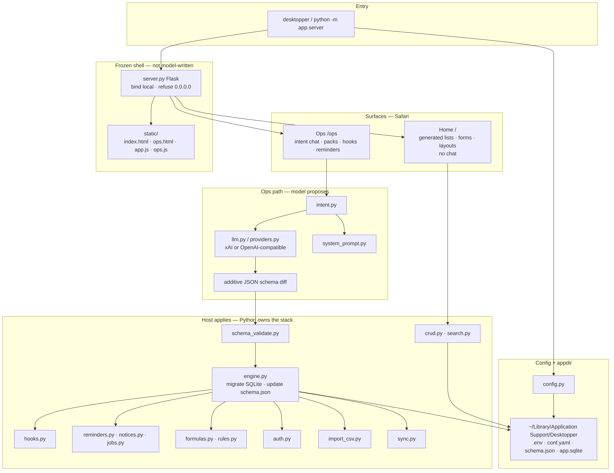

The problem
Small local apps usually go one of two ways. You hand-write the HTML, JavaScript, and SQL yourself, or you let a model invent the whole stack. I have done both. Neither ages well. I wanted to describe tables and screens in plain language without giving the model the render path.
Why I built it
Day to day, I wanted to spin up a work dashboard fast, with real CRUD on resources I would actually use, without hand-building every screen or handing the whole stack to a model.
A local macOS app was enough for that. In Ops I say what should change. The model comes back with an additive schema diff in JSON, not a pile of markup. Python checks it and applies it to SQLite. Safari then shows lists, forms, and layouts from that schema. The model never writes HTML, JavaScript, or SQL.
What I built
Desktopper is a local macOS app that treats the schema like the product. Ops is where you talk about the model. Home is the generated UI: lists, forms, related child lists, belongs-to links, scopes, field groups, empty states, and layouts.
Flask serves a frozen shell. Everything durable (data, secrets, knobs) sits under Application Support. There is no Node or npm in the stack.
Once the schema is in place there is more: Python hooks on create, update, delete, or startup; reminders and notices; formulas and rules; auth with column grants; CSV import profiles; peer sync with last-write-wins. The process binds where you tell it and refuses 0.0.0.0.
Three decisions
These are the craft bets I would defend in a design review, each one about honesty, ownership, or maintainability.
1. Diffs, not markup.
The LLM proposes. The host applies. Persistence and the UI shell stay in Python and static files. I was counting on that boundary holding when the model gets creative, because the failure I care about is trusting a generated stack I cannot audit. If the model writes HTML, JavaScript, or SQL, you are back to hoping the render path is honest.
2. Home is generated; Ops is separate.
Safari loads a frozen HTML/CSS/JS shell. Screens come from the schema. Home has no chat box. You open Ops when you mean to change the model; it does not redirect you there. I was counting on a clear mode switch so a work dashboard stays a dashboard. Mixing chat into the runtime UI would blur the line between using the app and rewriting it.
3. Secrets stay off the wire.
Keys live in Application Support .env, never in YAML. Knobs live in conf.yaml. The server will not serve either over HTTP, and bind stays local. I was counting on local ownership for something I would actually use day to day. If secrets ride the same path as screens, the app stops being something I trust on a machine I care about.
Proof
You can follow the same path the runtime takes: Ops intent becomes a schema diff, Python applies it, and Home renders from what landed in SQLite.

From the public repo, the README spells out that the model does not write HTML, JavaScript, or SQL and that there is no Node/npm; Ops versus Home; appdir bootstrap; the 0.0.0.0 refusal; and unittests under tests/.
Why I built it this way
These boundaries are the same ones I hold elsewhere: clear ownership, real persistence, and something a technical peer can judge quickly.
I needed work dashboards with CRUD, not another generated demo. If ordinary language is going to change that app, it should change the schema and stop there. Python owns validation and storage. The shell stays frozen. That is the stack I am willing to trust for something I would actually use day to day.